Праздник


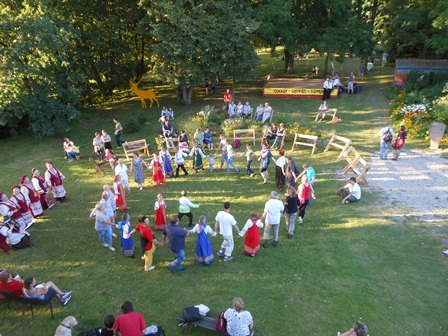
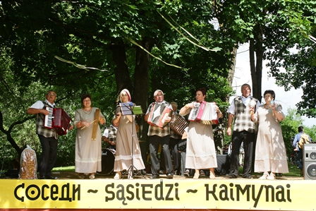
Ансамбль "Версме", Литва
На празднике была представлена новая экспозиция Виштынецкого эколого-исторического музея, посвящённая местному сообществу. Она приглашает гостей познакомиться с тем, чем живут люди в Роминтской пуще, самим выйти в лесную деревню по собственному маршруту с помощью местных проводников. Авторский коллектив проекта разработал буклеты, которые содержат информацию о жителях их предложениях для гостей территории.
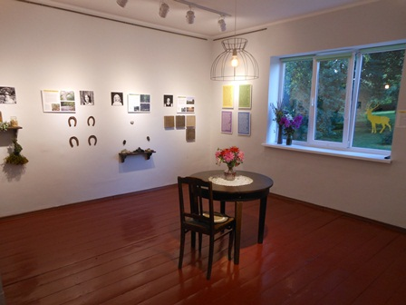
Выставка-экспозиция о туристических предложениях жителей Роминтской пущи
На празднике выступили народные коллективы: литовская капелла «Версме» из Гиреная-Виштытиса, впервые приехавшая в Краснолесье с помощью регионального парка Виштытис, давние друзья проекта ансамбль «Подруги» из Гаврилово Озёрского района (художественный руководитель Светлана Никирина), ансамбль польской песни «Крулевчане» национально-культурной польской автономии г. Калининград. Интерактивную программу для детей провёл театр «Дель» при Калининградском доме актёра регионального отделения Союза театральных деятелей РФ. Несколько часов работала ярмарка, где местные жители предлагали свои угощения.
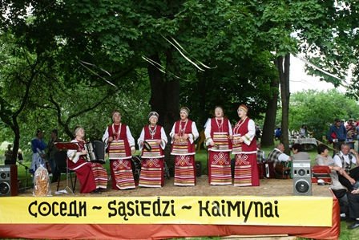
5 августа 2017 года в посёлке Краснолесье состояся праздник
"Лесная деревня. Соседи" - заключительное мероприятие по проекту Виштынецкого экомузея "Лесная деревня", поддержанного Благотворительным фондом В. Потанина в 2016 году в результате конкурса "Меняющийся музей в меняющемся мире".
"Лесная деревня. Соседи" - заключительное мероприятие по проекту Виштынецкого экомузея "Лесная деревня", поддержанного Благотворительным фондом В. Потанина в 2016 году в результате конкурса "Меняющийся музей в меняющемся мире".
На востоке Калининградской области команда проекта «Лесная деревня» 5 и 6 августа вместе с местными жителями представили гостям силу и богатство природных и культурных ресурсов Роминтской пущи и Виштынецкой возвышенности. Более 700 человек, единых в своей любви к прекрасным заповедным местам и их жителям, собрались на праздник «Лесная деревня. Соседи» в августовские выходные. Праздник в 2017 году прошёл в четвёртый раз.
В 2016 году проект «Лесная деревня» стал победителем грантового конкурса музейных проектов «Меняющийся музей в меняющемся мире» Благотворительного фонда В. Потанина. В ходе проекта местные жители создали новые маршруты и мастер-классы для путешественников. На финальном событии десятки гостей прошли вместе с Александром Дорошкиным, Натальей Добровольской, Людмилой Петренко по лугам и полям, к истокам и берегам живописных рек, узнали у семьи Шумилло, как устроен пчелиный улей и добывается мёд, Александр Самсонкин рассказал, чем полезны лекарственные травы, и где их найти, а Любовь Зайцева показала, что можно приготовить из десятков видов зелёных растений. Женский клуб «Ностальги» провел гостей по посёлку и устроил чтения в литературной гостиной в библиотеке, где калининградский писатель Борис Бартфельд прочел отрывки из своего романа. Все предложения местных жителей будут доступны для гостей не только во время праздника, но и постоянно. Познакомиться с ними можно на сайте Виштынецкого экомузея:
Директор благотворительных программ Благотворительного фонда В.Потанина Ирина Лапидус в своем слове на открытии финального мероприятия «Лесной деревни» сказала, что этот проект – настоящая история про сообщество, про семейные традиции, которые становятся подарком для всех». Прозвучало приветствие Председателя Калининградской областной Думы Марины Оргеевой о важности гуманитарной проекта – налаживании добрососедских отношений между тремя народами, населяющими заповедную Роминтскую пущу. В парке музея выступила заместитель министра культуры и туризма Калининградской области Елена Кошемчук. Правительство Калининградской области и Министерство культуры и туризма несколько лет поддерживают праздник «Соседи» и усилия музея по укреплению связей в местном сообществе на востоке области и развитию туризма в этом районе. Гармония красоты природы и красоты души, которая там складывается, важна и уникальна. Благодаря «Лесной деревне» в музее впервые встретились директора трёх граничащих друг с другом природных парков – Яромир Краевский из польского парка «Пуща Роминска», Нериюс Пашкаускас из литовского регионального парка «Виштытис» и Андрей Гриднев из природного парка «Виштынецкий». Также выступили те, кто поддерживал проект и праздник: вице-консул Генерального консульства Республики Польша в Калининграде Ярослав Стыхарский, руководитель особо охраняемых природных территорий Министерства экологии и природных ресурсов Калининградской области Андрей Орлов.
Праздник «Лесная деревня. Соседи» поддержали Министерство культуры и туризма Калининградской области, природный парк «Виштынецкий», Калининградский союз фотохудожников, региональный парк Виштытис (Литва), ландшафтный парк Пущи Роминской (Польша), администрация Нестеровского района, администрация Чистопрудненского сельского поселения, АНО «Музей городской жизни», местная польская национально-культурная автономия г. Калининграда «Полония», Калининградское региональное отделение Союза театральных деятелей РФ, региональная общественная организация писателей Калининградской области, местные жители и волонтеры из Калининградской области.
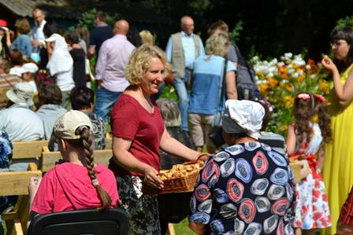
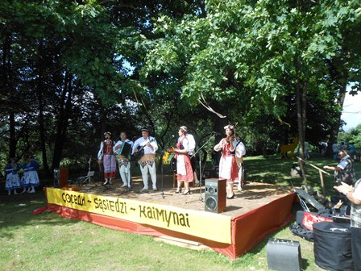
Ансамбль "Крулевчане", г.Калининград
Ансамбль "Подруги", пос. Гаврилово
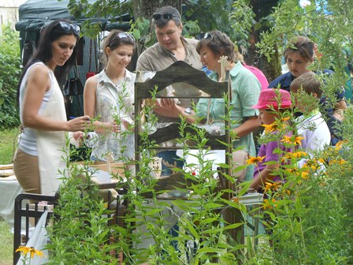
На ярмарке
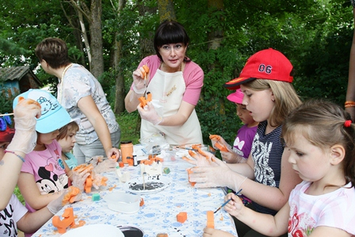
Мастер-класс от семьи Уфимцевых по деревянным фигуркам ведёт Елена Уфимцева
Программа праздника
5 августа 2017 г., суббота
12:00 – 16:00 Ярмарка и угощения – готовят местные жители с Натальей Добровольской
12:00 – 12:30 Открытие, представление новой музейной экспозиции.
13:00 – 14:30 Концерт (ансамбль «Подруги» из Гаврилово, капелла «Гиренай» из Виштытиса, аккордеонист из Голдапа Норберт Давидовски, ансамбль «Крулевчане» / Полония)
14:00 – 19:00 Прогулки и мастерские от местных жителей (сбор у музея):
14:00 Прогулка к истокам реки Синяя и старой липовой аллее с Александром Дорожкиным – около 2 часов
С 14:00 Знакомство с лошадьми и конные прогулки по Краснолесью и окрестностям с Людмилой Петренко
15:00 Прогулка по Краснолесью и «Литературная гостиная» с женским клубом Краснолесья – 2 часа. В «Литературной гостиной» (поселковая библиотека) Борис Бартфельд читает отрывок из романа, с 17 ч.
16:00 Пчеловодческая мастерская с Татьяной Шумило – 1 час
16:00 Луговая прогулка («аптекарский огород») с Александром Самсонкиным – около 2 часов,
18:00 Мастерская «Зелёная кухня» (вегетарианство и огородничество) с Любовью Зайцевой – 1 час
14:30 - 15:30 Интерактивная программа для детей. Коллектив театра «Дель» при Доме актера Калининградского регионального отделения Союза театральных деятелей РФ
15:00 – 18:00 Концертная программа творческой мастерской «Поющие поколения», организатор Краснолесенский Дом культуры и Ирина Ковардо, площадка - ДК
18:00 – 20:00 «Частушки и хороводы» с ансамблями «Подруги» и «Забавушка» (художественный руководитель Светлана Никирина) и участниками «Поющих поколений»; площадка - музей
22:00 – 24:00 Дискотека в ДК (мелодии и ритмы соседской эстрады), ди-джей Plastinka (Данил Акимов) и Ирина Ковардо
6 августа 2017 г., воскресенье
10:00 – 14:00 Лесное купание. Медитативная прогулка по лесу с Натальей Добровольской к трем соснам у р. Красной. Старт – посёлок Дмитриевка.
10:00 – 13:00 - Прогулки вдоль р. Красная к Токаревскому мосту с Людмилой Петренко – 1 час, старт в начале каждого часа у ж/д переезда, пос.Токаревка.
Проект-победитель XIII Грантового конкурса музейных проектов «МЕНЯЮЩИЙСЯ МУЗЕЙ В МЕНЯЮЩЕМСЯ МИРЕ», конкурс проводит
Благотворительный фонд В. Потанина при поддержке Министерства культуры Российской Федерации и оперативном управлении Ассоциации менеджеров культуры (АМК)
Благотворительный фонд В. Потанина при поддержке Министерства культуры Российской Федерации и оперативном управлении Ассоциации менеджеров культуры (АМК)
Руководитель проекта "Лесная деревня"
Анна Карпенко, тел.: +7906-234-76-69,
эл.-почта: a-karpenko2006@yandex.ru
Анна Карпенко, тел.: +7906-234-76-69,
эл.-почта: a-karpenko2006@yandex.ru
ДНЕВНИК ПРОЕКТА "Лесная деревня"
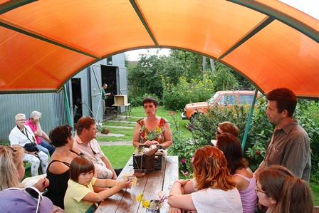
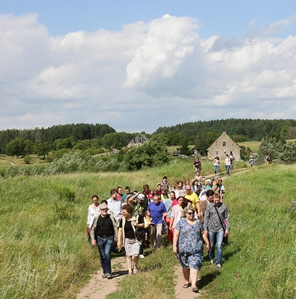
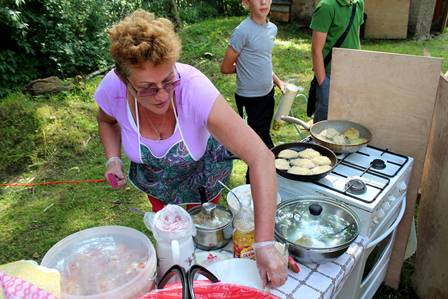
Пчеловодческая мастерская на усадьбе семьи Шумилло проводит Татьяна Шумилло
Познавательная прогулка в окрестности пос. Краснолесье
Угощение от местных жителей, Марина Рюмкина

Фото: Александр Матвеев, Алексей Соколов
Текст: Анна Карпенко
Текст: Анна Карпенко
7 августа 2017 г.